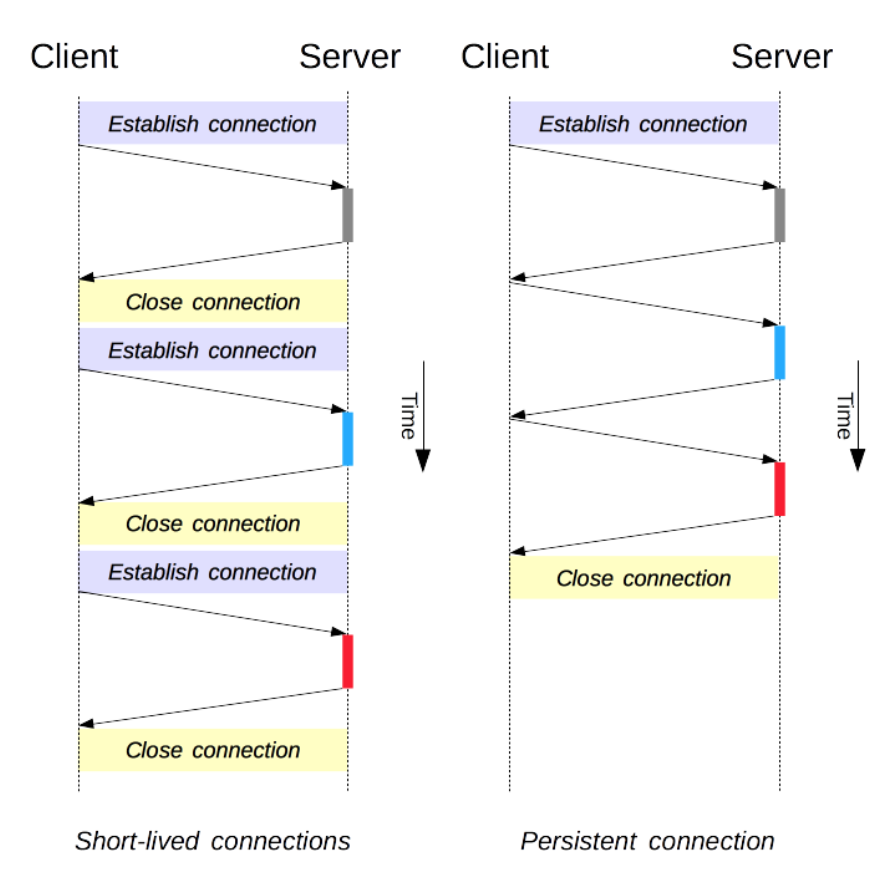
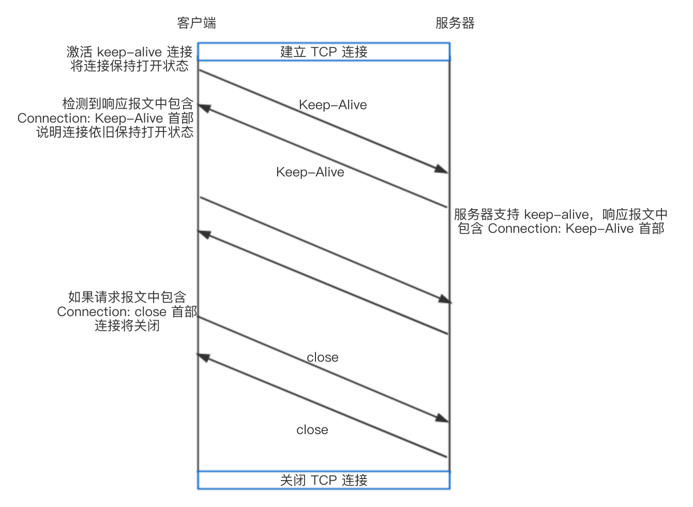
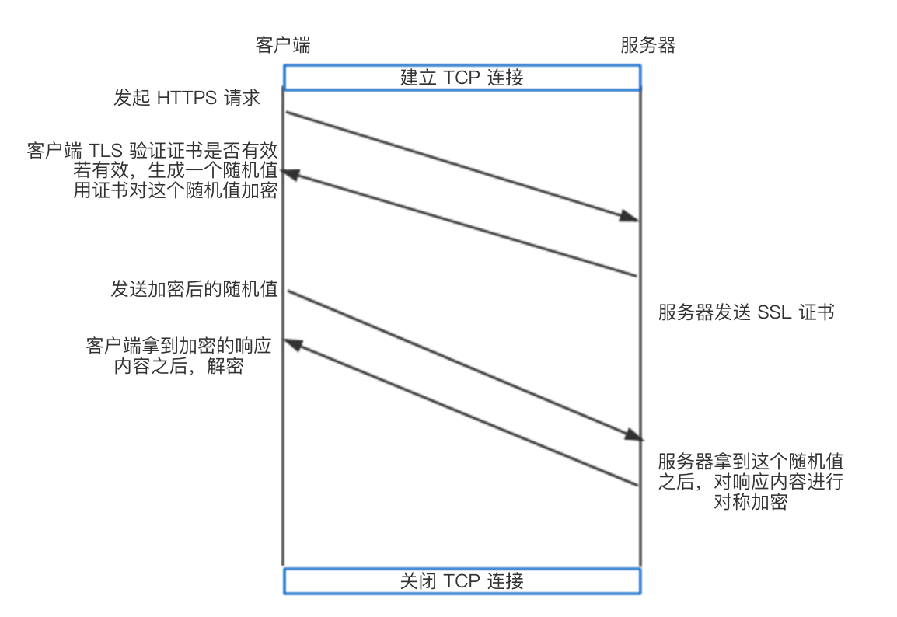

这一章的笔记主要包括：
- HTTP 协议
- HTTP 报文
- HTTP 方法以及幂等性
- 状态码以及原因短语
- HTTP 连接管理
- 非持续连接
- 持续连接
- HTTP/1.0+ keep-alive 连接
- HTTP/1.1 persistent 连接
- HTTP/1.1 pipelining
- 持续连接模式如何判断数据包已发完
- HTTP 事务的延迟
- HTTP/2 特性
- 二进制传输
- 多路复用
- Header 压缩
- Server Push
- 重置连接
- 流量控制
- HTTP 与 HTTPS 的区别
- SSL 的作用
- 传输过程
开始之前先说说 (Q1)什么是 HTTP 事务？
HTTP 事务由以下几部分构成：
- 连接：客户端向服务端发起连接
- 请求：客户端向服务端发送请求报文
- 响应：服务端向客户端发回响应结果
- 关闭连接：任意一端或两端关闭连接
HTTP 协议
HTTP 协议是一个应用层协议，使用 TCP 作为它的支撑传输协议
(Q2)浏览器(客户端)与服务端之间传输 HTTP 报文的具体过程是怎么样的？
- 客户端发起一个与服务端的 TCP 连接
- TCP 连接建立之后，客户端和服务端的进程进行通信
- 客户向它的套接字接口发送 HTTP 请求报文
- 服务端从它的套接字接口接收 HTTP 请求报文并发送 HTTP 响应报文
- 客户从它的套接字接口接收 HTTP 响应报文
HTTP 报文
HTTP 报文分成两类：
请求报文 request message
<method> <request-URL> <version> <headers> <entity-body>响应报文 response message
<version> <status> <reason-phrase> <headers> <entity-body>
HTTP 报文由三个部分组成：
- 对报文进行描述的起始行 start line
- 根据 message 可以分为
- 请求行，包含了方法、URL、HTTP 版本，例如
GET /test.txt HTTP/1.0 - 响应行，包含了HTTP 版本、状态码、描述操作状态的原因短语，例如
HTTP/1.0 200 OK
- 请求行，包含了方法、URL、HTTP 版本，例如
- 根据 message 可以分为
包含属性的首部 header
- HTTP 首部字段在报文中添加了一些附加信息
HTTP 首部可以分为以下几类：
通用首部：客户端和服务器都可以使用的通用首部，在客户端、服务器、其他应用程序之间提供一些非常有用的通用功能，包含 Cache-Control、 Connection、Date、Pragma、Transfer-Encoding、Upgrade、Via
// 服务器产生响应的日期 Data: Tue, 1June 2019 01:01:01 GMT // 保持 keep alive 模式 Connection: Keep-Alive- 请求首部：用于请求报文，为服务器提供一些额外的信息，比如客户端希望接受什么类型的数据
// 客户端可接受 GIF Accept: image/gif - 响应首部：用于响应报文，为客户端提供一些额外的信息，比如告知客户端在与哪种类型的服务器进行交互
// 客户端在与版本为 1.0 的 Apache 服务器进行交互 Server: Apache/1.0 实体首部：对实体主体部分的一些说明，例如说明实体主体部分的数据类型，数据包含多少字节等等
// 主体数据是以 utf-8 字符集表示的 html 文档 Content-Type: test/html; utf-8 // 实体的主体包含了 1024 字节的数据 Content-length: 1024- 扩展首部：非标准的首部，由程序开发者自己添加，即时不知道这些扩展首部的含义，HTTP 程序也要接受它们并对其进行转发
- 包含数据的主体 body (可选)
- HTTP 要传输的内容
(Q3)有哪些缓存相关的头部
Expires
Expires: Mon, 1 Aug 2016 22:43:02 GMT服务器告诉浏览器一个绝对的过期时间
在这个时间之前，先把这个文件缓存起来，直接从缓存中取文件Cache-Control(HTTP/1.1)
Cache-Control: max-age=80服务器告诉浏览器一个相对的过期时间
Expires 和 Cache-Control 同时出现时，以 Cache-Control 为准Last-Modified 与 If-Modified-Since 假设没有设置 Expires 或者 Cache-Control，那么浏览器在第一次请求资源的时候，服务端返回资源内容，同时告诉客户端这个文件最后修改时间：
Last-Modified: Mon, 01 Aug 2016 13:48:44 GMT在第二次请求资源的时候，请求头带上：
If-Modified-Since: Mon, 01 Aug 2016 13:48:44 GMT
服务器收到请求后，对比 If-Modified-Since 与最后修改时间，如果没有修改，直接返回 304；如果修改了，返回 200，并返回新的资源内容
下面详细说说起始行的各个部分
HTTP 方法
下面说说几种常见的 HTTP 方法
| HTTP 方法 | 使用场景 |
|---|---|
| GET | 用于请求服务器发送某个资源 |
| HEAD | HEAD 方法与 GET 方法类似，但是服务器在响应中只返回首部，不会返回 body。 这允许客户端在未获取实际资源的情况下，对资源的首部进行检查，例如： (1). 在不获取资源的情况下了解资源的情况(类型) (2). 通过查看响应中的状态码，看看某个对象是否存在 (3). 通过查看首部、测试资源是否被修改 |
| POST | 让服务器用请求的 body 部分创建一个新文档 |
| PUT | 让服务器用请求的 body 部分替换 URL 指定的资源 |
| DELETE | 请服务器删除 URL 指定的资源 |
在使用这些方法的时候，要注意幂等性
幂等性
如果一个 HTTP 事务，不管执行一次还是多次，得到的结果都相同，这个事务就是幂等的
接口的幂等性实际上就是接口可重复调用，在调用方多次调用的情况下，接口最终得到的结果是一致的
(Q4)GET, HEAD, PUT, POST, DELETE 这些方法的是否幂等？
判断 HTTP 方法的是否幂等，主要看一次和多次请求某一个资源能否得到相同的结果
很容易看出 GET, HEAD, DELETE 这些方法都是幂等的
比较容易混淆的是 PUT, POST
对于 POST，每次 POST 请求都是会创建一个新的资源，所以它不是幂等的
对于 PUT，PUT 请求会创建或更新的资源本身，对同一资源进行多次 PUT 的副作用和一次 PUT 是相同的，所以它是幂等的
(顺便提一句，PATCH 我不太常用，它是不幂等的，它可以每次修改数值为+1)
(Q5)如何保证接口幂等？
一般是通过全局唯一标识(ID)来保证幂等
比如订单，通过主键或是加唯一索引，保证一个订单有唯一标识，重复创建时会报错
状态码与原因短语
状态码有：
- 1xx 信息性状态码
- 2xx 成功状态码
- 3xx 重定向状态码
- 4xx 客户端错误状态码
- 5xx 服务端错误状态码
要细说起来有不少。但其实在生产开发中，程序员更加关注错误状态码 4xx， 5xx，这里挑几个常见的写写 (主要是自己真的记不了太多 :(
| 客户端错误状态码 | 原因短语 |
|---|---|
| 400 | Bad Request (仅告知客户端它发了一个错误的请求) |
| 401 | Unauthorized (未认证) |
| 403 | Forbidden (请求被服务器拒绝，比如权限不够等等) |
| 404 | 找不到所请求的 URL |
| 服务器错误状态码 | 原因短语 |
|---|---|
| 500 | Internal Server Error (服务器提供服务错误) |
| 502 | Bad Gateway (服务器从请求响应链的下一条链路上收到了一条未响应，比如，它无法连接到其父网关) |
| 503 | Service Unavailable (服务器现在暂时无法为请求提供服务) |
| 504 | Gateway Timeout (网关或代理在等待另外一服务器对其请求进行响应时，超时) |
PS：关于设计 RESTful api 这里就不写了，可以将就看看我以前随手写的文章 谈谈对 RESTful 的认识
HTTP 连接管理
HTTP 协议是无连接无状态的，采用“请求-应答”模式
(Q6) HTTP 传送一条报文，是如何经过 TCP 的呢？
HTTP 要传送一条报文时，会以流的形式将报文数据的内容通过一条打开的 TCP 连接按序传输。TCP 收到数据流之后，会将数据流看成几段数据块，并将段数据块封装在 IP 分组中，通过因特网进行传输
(Q7) HTTP 传送一系列报文，是如何控制 TCP 连接的？是每个请求/响应通过一个新的 TCP 连接发送，还是所有的请求/响应通过同一个 TCP 连接发送？
这两种控制方式都是可以的，下面具体介绍

非持续连接(短连接)
HTTP/1.0 规定浏览器与服务器只保持短暂的连接：每个 “请求 - 响应” 都需要一个新的 TCP 连接
浏览器的每次请求都需要与服务器建立一个 TCP 连接，服务器完成请求处理后立即断开 TCP 连接，服务器不跟踪每个客户也不记录过去的请求
这种连接方式比较简单，客户端的请求报文和服务端的响应报文都是顺序的；但是 TCP 三次握手和四次挥手需要耗费时间
持续连接(长连接)
持续连接是一种在一段时间内保持打开状态的连接，可以对多个请求重复使用
HTTP 长连接不可能一直保持，可以通过设置 keep-alive 参数来调整
HTTP/1.0+ keep-alive 连接
在 HTTP/1.0+ 中，keep-alive 并不是默认使用的，客户端必须发送一个 Connection: Keep-Alive 请求首部来激活 keep-alive 连接，请求将一条连接保持在打开状态；如果客户端没有发送 Keep-Alive 首部，服务器就会在那条请求之后关闭连接
如果服务器支持 keep-alive，就在响应中包含 Connection: Keep-Alive 的首部；如果服务器不支持 keep-alive，响应中不包含这个首部，会在发回响应报文之后关闭连接
客户端通过检测响应报文中是否包含 Connection: Keep-Alive 响应首部，判断服务器是否会在发出响应报文之后关闭连接
具体过程可看图：

Keep-Alive 通用首部，可以用参数(可选)来调节 keep-alive 的行为：
timeout：是在 Keep-Alive 响应首部发送的，它估计了服务器希望将连接保持在活跃状态的时间(不是承诺值)max：是在 Keep-Alive 响应首部发送的，它估计了服务器还希望为多少个事务保持此连接的活跃状态(不是承诺值)
例如 Keep-Alive: timeout=5, max=100，表示这个TCP通道可以保持5秒，max=100，表示这个长连接最多接收100次请求就断开
HTTP/1.1 persistent 连接
在 HTTP 1.1 版本中，默认情况下所有连接都被保持，不需要通过 Connection: Keep-Alive 激活；如果 Connection: close 才关闭连接。
目前大部分浏览器都使用 HTTP 1.1 协议，也就是说默认都会发起 Keep-Alive 的连接请求了，但是否能完成一个完整的 Keep-Alive 连接要看服务器是否支持
HTTP/1.1 pipelining
HTTP/1.1 还采用了 Pipelining(流水线)：
允许客户端不用等待上一次请求结果返回，就可以发出下一次请求，但服务器端必须按照接收到客户端请求的先后顺序依次回送响应结果，以保证客户端能够区分出每次请求的响应内容
注意下面几点：
- 流水线机制通过持久连接（persistent connection）完成，仅 HTTP/1.1 支持此技术（HTTP/1.0不支持）
- 只有幂等的请求(GET/HEAD/PUT/DELETE)可以进行流水线，而 POST 则有所限制
- 初次创建连接时不应启动管线机制，因为对方（服务器）不一定支持 HTTP/1.1 版本的协议
- 流水线不会影响响应到来的顺序
- HTTP/1.1 要求服务器端支持管线化，但并不要求服务器端也对响应进行流水线处理，只是要求对于流水线的请求不失败即可
- 由于上面提到的服务器端问题，开启管线化很可能并不会带来大幅度的性能提升，而且很多服务器端和代理程序对管线化的支持并不好，因此现代浏览器如 Chrome 和 Firefox 默认并未开启流水线支持
(Q8) HTTP 协议持续连接，如何判断接收端已全部收到发送方发出的数据包？
对于非持久连接，浏览器可以通过连接是否关闭来界定请求或响应实体的边界；而对于持久连接，这种方法显然不奏效。那么 HTTP 长连接是如何判断接收方已经全部收到发送方发出的数据而避免长时间的等待呢？
根据头部的
Content-Length长度服务端响应报文的头部有
Content-Length字段，明确了报文的长度客户端可以通过响应报文 Content-Length 的长度信息，判断出响应实体已结束
(Q9)如果 Content-Length 和实体实际长度不一致会怎样？
如果 Content-Length 比实际长度短，会造成内容被截断；如果比实体内容长，会造成 pending
根据头部的
Transfer-Encoding在头部加入
Transfer-Encoding: chunked之后，就代表这个报文采用了分块编码这时，报文中的实体需要改为用一系列分块来传输。每个分块包含十六进制的长度值和数据，长度值独占一行，长度不包括它结尾的 CRLF（\r\n），也不包括分块数据结尾的 CRLF。
最后一个分块长度值必须为 0，对应的分块数据没有内容，表示实体结束
HTTP 事务的时延
HTTP 事务的时延有以下几种原因：
通过 DNS 服务器查询主机名对应的 IP 地址存在时延
每条新的 TCP 连接都有连接建立时延：客户端会向服务器发送一条 TCP 连接请求，并等待服务器回送一个接受应答
连接建立之后，因特网传输报文有传输时延
服务器处理请求需要时间
HTTP/2 特性
我在 stackoverflow 上找了一些回答：
What is the difference between HTTP 1.1 and HTTP 2.0?
看了这篇博客 http2 vs http1.9 觉得很不错，以下笔记从这里翻译过来的
HTTP/2 与 HTTP/1.1 主要有以下区别：
- 二进制帧
- 多路复用
- Header Compression
- Server Push
- 重置连接
- 流量控制
下面简要说说这些特性
二进制帧
HTTP/2 是一个二进制协议，而不是 text/ascii
HTTP/1 的报文是由 Start Line/Header/Body 组成，各个部分之间以文本换行符分隔，使用文本格式给传输层传递信息
而 HTTP/2 在传输信息的时候，会把报文分割成更小的帧，并且用采用二进制编码
帧的类型有多种，可以设置
- Type
- Length
- Flags
- Stream
- Identifier
- Frame Payload
HTTP/2 规范中定义了十个不同的框架，对应 HTTP/1.1 的两个最基本的框架是 Headers 和 Data
- Start Line/Header 信息会被封装成 Header Frame
- Body 信息会封装成 Data Frame
多路复用 (Multiplexed Stream)
HTTP/1.1 的多路复用：
- 复用同一个 TCP 连接期间，客户端通过管道同时发送多个请求，服务端按请求的顺序依次给出响应
- 客户端在未收到之前所发出的一系列请求的响应之前，将会阻塞后面的请求 (Head-of-line blocking)
- 半双工
HTTP/2 的多路复用：
- 客户端发送多个请求之后，服务端给出多个响应的顺序不受限制
- 不存在 Head-of-line Blocking，每个请求带有一个 31bit 的优先值，优先级高的先处理
- 全双工，连接可以承载任意数量的双向数据流
这一特性使得，同个域名只需要占用一个 TCP 连接，消除了因多个 TCP 连接而带来的延时和内存消耗
Header 压缩
HTTP/1.x 的请求报文中，携带了大量冗余的头部信息(cookie、浏览器信息等等)，浪费了很多带宽资源
HTTP/2 采用 HPACK 算法压缩 Header，节省了头部占用的空间。此外，在客户端和服务器中使用「首部表」来跟踪和存储之前发送的 key-value，对于相同的数据，不再通过报文传送
具体 HPACK 算法
Server Push
HTTP/2 中，服务器可以在响应中主动推送其他资源
举个例子：客户端请求一个 HTML 页面，服务器不仅是把 HTML 发送过去，而且还主动推送了 JS 和 CSS 文件，不需要等到浏览器解析 HTML 时在去响应请求
服务端可以选择是否主动推送，客户端也能选择是否接收
重置连接 (Reset)
HTTP/1.1 有一个缺点是：当 HTTP message 以一定大小 (Content-Length) 发送时，你不能轻易将其停止
拆除 TCP 连接可行，代价是必须要重新进行 TCP 连接
而 HTTP/2 中，可以通过 RST_STREAM 帧完成，可以再不拆除连接的前提下，取消 request，这有助于防止浪费带宽
流量控制(Flow Control)
HTTP/2 中，每端都有自己的流量窗口，限制了发送/接受数据
具体看 HTTP2 详解 - 流量控制
HTTP 与 HTTPS 的区别
为了数据传输的安全，HTTPS 在 HTTP 的基础上加入了 SSL 协议(在 HTTP 和 TCP 之间)，SSL 依靠证书来验证服务器的身份，并为浏览器和服务器之间的通信加密
HTTP 的连接是无状态的
HTTPS 协议是由 SSL + HTTP 协议构建的可进行加密传输、身份认证的网络协议
SSL 的作用
认证用户和服务器，确保数据发送到正确的客户机和服务器；
加密数据以防止数据中途被窃取；
维护数据的完整性，确保数据在传输过程中不被改变
传输报文的过程
简单画了个图：

PS: https 对 header，body 都是加密的
本文笔记内容建立在我对 《HTTP 权威指南》的理解之上
并参考了以下文章：
- http transcation
- mozilla - Connect management in HTTP 1.x
- HTTP 笔记
- transfer encoding header in http
- HTTP与缓存相关的头部信息
- http2 vs http1.9
- 掘金 - HTTP2 详解
感谢以上文章的作者对我的帮助~
如有错误，欢迎指出